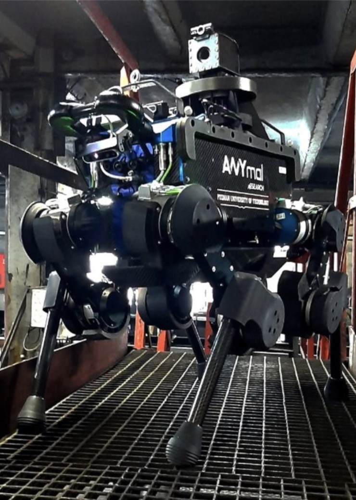

Lute
Co-founder and CTO, since 2026Physical AI that turns robot hardware into work on real store and factory floors. Our research notes cover data curation, real-time control and deployment.
I am a co-founder and CTO at Lute.
Lute is a physical AI company that puts intelligence to work. We deploy robots at the actual work sites in retail, logistics and manufacturing.
Lute is hiring researchers and engineers in robot learning. See open roles.
I am an assistant professor at Poznań University of Technology (PUT), where I have spent my research career working on robots that touch things: legged robots that recognise terrain through their feet, grippers that estimate how soft an object is, and dual-arm robots that handle cables. I led the Poznań teams in two EU Horizon 2020 projects, THING and REMODEL, and the Physical Interaction Robotics team at IDEAS NCBR in Warsaw.
Physical AI that turns robot hardware into work on real store and factory floors. Our research notes cover data curation, real-time control and deployment.

Can a vision-language model tell how far a robot, or a person, has got through a task? An open benchmark for using that signal to filter demonstrations before training.

One locomotion policy trained on 16 simulated robots, from quadrupeds and hexapods to humanoids, that transfers zero-shot to real robots.

A focus piece on why engineering can take locomotion past what biology allows, from hybrid wheeled legs to learning gaits that use touch, not just cameras.

The ANYmal quadruped learns to predict terrain properties from camera images, using what its feet felt as free training labels.

Legged robots that classify terrain and structures through their feet, tested in mines and sewers with ANYmal, when cameras and lidar fail.
Full list on Google Scholar and ORCID.